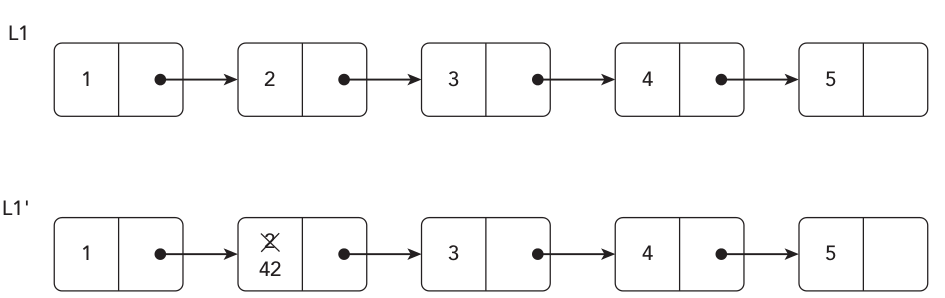
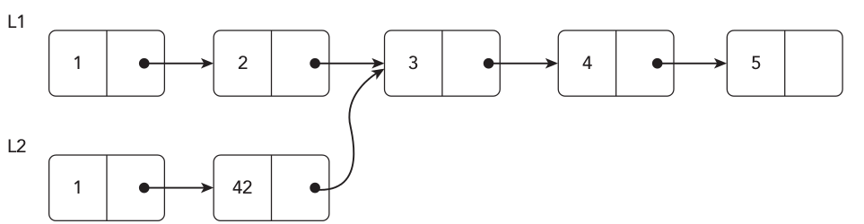
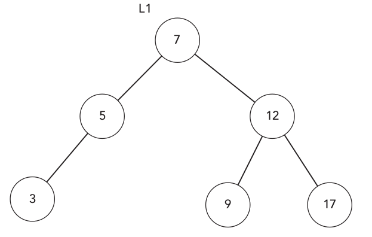
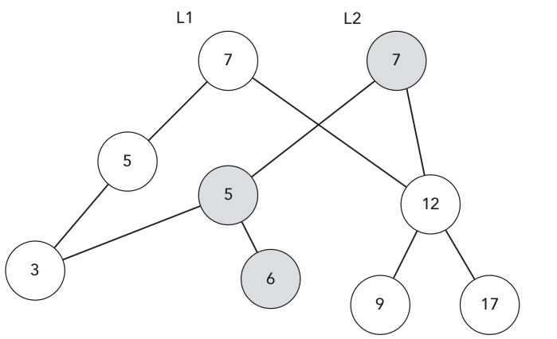
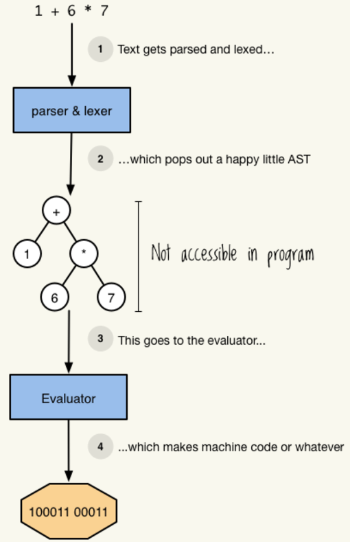
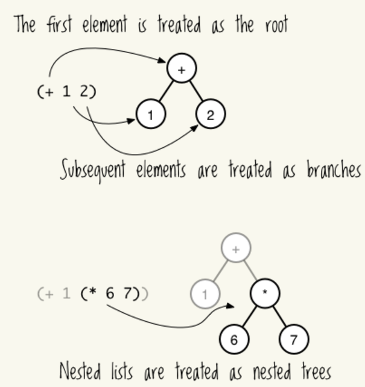
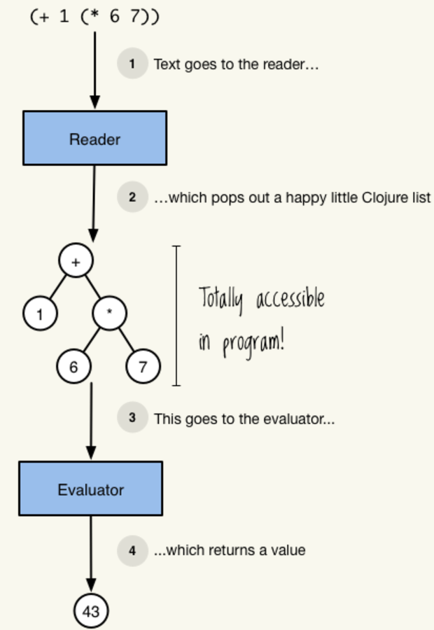
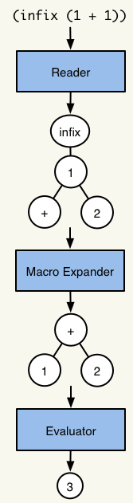
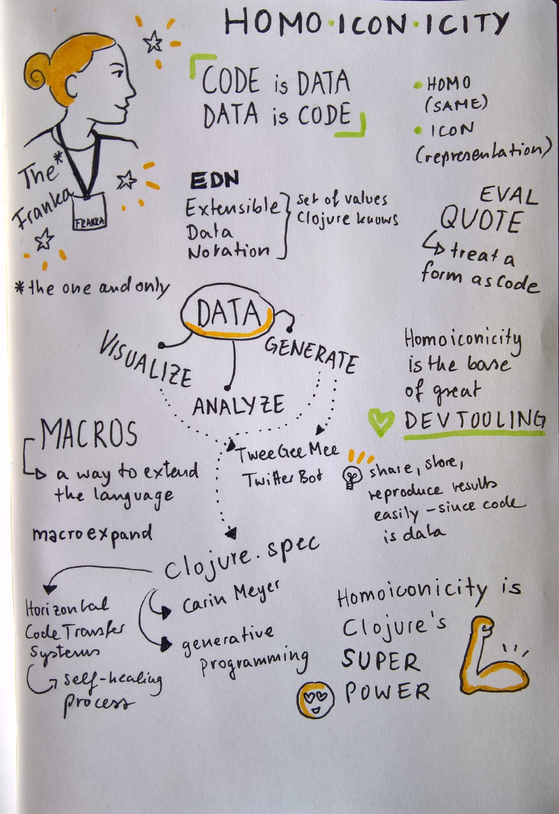

Napredne tehnike programiranja - Clojure
Sadržaj

Clojure is a dynamic, general-purpose programming language, combining the approachability and interactive development of a scripting language with an efficient and robust infrastructure for multithreaded programming. Clojure is a compiled language, yet remains completely dynamic – every feature supported by Clojure is supported at runtime. Clojure provides easy access to the Java frameworks, with optional type hints and type inference, to ensure that calls to Java can avoid reflection.
Clojure is a dialect of Lisp, and shares with Lisp the code-as-data philosophy and a powerful macro system. Clojure is predominantly a functional programming language, and features a rich set of immutable, persistent data structures. When mutable state is needed, Clojure offers a software transactional memory system and reactive Agent system that ensure clean, correct, multithreaded designs.
– Rich Hickey (author of Clojure)
1 Uvod
If your mind is empty, it is always ready for anything, it is open to everything. In the beginner's mind there are many possibilities, but in the expert's mind there are few.
– Shunryu Suzuki
1.1 Lisp
Lisp ili LISP je porodica programskih jezika sa dugom istorijom. Na prvi pogled ga karakteriše prefiksna notacija i izrazi u zagradama. Prvobitno je specificiran 1956. godine od strane John McCarthy-a za potrebe njegovih istraživanja u oblasti veštačke inteligencije (McCarthy je inače i smislio naziv artificial intelligence - AI). Lisp je drugi najstariji programski jezik visokog nivoa, samo je Fortran jednu godinu stariji, a poređenja radi:
Lisp je konstruisan kao matematička notacija za kompjuterske programe inspirisana Lambda računom(Alonzo Church). Ovaj način predstave programa doneo je mnoge ideje u kompjuterske nauke:
- strukture tipa stabla
- automatsko upravljanje memorijom (garbage collector)
- dynamic typing
- kondicionale (grananje)
- funkcije višeg reda
- rekurziju i rekurzivan opis podataka
- self-hosting kompajler
- REPL itd.
Veliki broj navedenih stvari inspirisao je programske jezike koji su nastali nakon Lisp-a (tj. skoro sve programske jezike) ali neki od korisnih koncepata iz Lisp-a se i dan dans smatraju naprednim i još uvek nisu podržani u pojedinim jezicima koji se intenzivno koriste.
Matematičku formulaciju Lisp-a i koncepata koje ona donosi nadalje pogledajte ovde (poglavlja 1.1, 1.2 i 1.3).
Pored Clojure dijalekta kojim ćemo se baviti na ovom kursu tu je još pregršt drugih dijalekata sa raznim osobinama:
1.1.1 Scheme
Scheme je jedan od najznačajnijih dijalekata Lisp-a. Dizajniran je od početka sa idejom funkcionalnog programiranja i minimalizma sa veoma moćnim mehanizmima za proširenje jezika. Prvi je dijalekat koji usled naglašavanja funkcionalnog programiranja uvodi tail call optimizaciju. Takođe jedan je od prvih programskih jezika koji imaju podržanu kontinuaciju.
Neke od "biblija" računarske nauke su kao jezik-primer uzimale upravo Scheme. Jedna, vrlo značajna, takva knjiga je i Structure and Interpretation of Computer Programs.
Postoji mnogo raznih dijalekata Scheme-a a ovde će biti navedena samo dva.
- Chez Scheme (Cisco)
Chez je Scheme implementacija zajedno sa (moćnim) kompajlerom, run time sistemom i bibliotekama. Koristi je kompanije Cisco a od skoro je open source.
Ako danas želite da probate Scheme da njime rešite problem na kome radite a fokus Vam je na performansama, IO, konkurentnom programiranju ili Vam treba dobra mogućnost korišćenja postojećih C biblioteka onda nije loše da počnete sa Chez-om.
- Racket lang
Racket lang je takođe implementacija Schema-a ali sa potpuno drugim ciljevima pri dizajnu. Racket je po svom dizajnu sistem za pravljenje programskih jezika (i/ili DSL-ova). Ima veoma dobar ekosistem biblioteka (u formi jezika) za razne standardne (WEB serveri, GUI …) i manje standardne zadatke. Sve njegove biblioteke su veoma dobro dokumentovane. Racket ima i svoje razvojno okruženje (IDE) DrRacket koje sadrži sve na šta ste navikli od jednog IDE-a (uključujući i grafički debugger). Ako je dizajn DSL-ova način na koji razmišljate pri rešavanju problema onda će Racket lang i njegovo okruženje biti odlično društvo od kojeg možete mnogo da naučite.
1.2 Clojure - funkcionalni način razmišljanja
Danas postoji mnogo programskih jezika i zaista se (pre)veliki deo njih međusobno razlikuje skoro isključivo po sintaksi. Tako da danas nije nikakav problem nazivati se polyglot programerom - samo naučite par sintaktičkih pravila i Voila! znate još jedan programski jezik (nezaboravite da osvežite svoj CV).
Clojure ipak nije jedan od jezika koji se početniku čini od ranije poznatim. Čak ni na prvi pogled (za šta je zaslužna S-expression prefiksna notacija). Stoga, kako biste ga naučili morate primeniti neku drugu strategiju u odnosu na onu navedenu iznad.
Evo jednog predloženog pristupa:
Zaboravite sve što znate o programiranju. Pristupite učenju Clojure-a kao da Vam je to prvi programski jezik . U suprotnom ćete Clojure shvatiti samo kao prefiksnu notaciju sa zagradama koja Vam ne dozvoljava da pišete kod onako kako ste navikli!
Umesto da pokušavate svoje znanje od ranije da preslikate na Clojure, dozvolite ovom Lispu da obogati način na koji pišete ostale programske jezike.
1.3 Imperativno vs funckionalno programiranje
C, C++, C#, Java, Python svi ovi (i drugi) programski jezici imaju veoma sličnu sintaksu i svi koriste veoma slične programske konstrukcije sa akcentom na imperativno programiranje.
U kompjuterskoj nauci imperativno programiranje je paradigma programiranja koja koristi naredbe u cilju menjanja stanja programa.
Ova paradigma programiranja se savršeno uklapa u von Neumann-ov model izračunavanja na računaru. Tačnije, ona je dizajnirana kako bi oslikala pomenuti model izračunavanja.
Na primer, C je dominirao softverom veliki broj godina jer se odlično uklapa u ovu dominantnu paradigmu hardverske arhitekture. Programi napisani u C-u su veoma efikasni i u stanju su da vrše veoma efikasno upravljanje memorijom koja je do skora bila veliki problem. Ova efikasnost je plaćena cenom izraženom u kompleksnijoj semantici i sintaksi samog jezika pa sa porastom programskog koda dramatično opada sposobnost programera da iskontroliše konstruktorsku kompleksnost što dovodi do češćih defekata u radu programa (program radi brzo ali ne i ono što želimo — korektno). Ova kompleksnost potiče od toga što kod imperativnog programiranja posao koji naredbe obavljaju snažno zavisi od stanja memorije u tom momentu. To čini konkurentno programiranje veoma komplikovanim i stoga podložnim greškama.
Danas kada je memorija veoma brza i jeftina a kada višeprocesorske arhitekture svi nosimo u džepovima ili pametnim satovima imperativno programiranje počinje da pokazuje ozbiljne znake starenja.
Funkcionalno programiranje se zasniva više na stabilnim matematičkim konceptima nego na bilo kom modelu izračunavanja na mašini. Clojure kao funkcionalan programski jezik ima snažan fokus na nepromenljivosti podataka (u daljem tekstu imutabilnost). To mu omogućava veoma čiste i jednostavne apstrakcije za konkurentno programiranje koje su svakako korektnije i manje podložno greškama od eksplicitnog zaključavanja delova memorije na koje smo usmereni u imperativnom programiranju.
Clojure (kao Lisp) je zapravo zasnovan na jednom veoma konciznom matematičkom modelu kakav je Lambda račun pa tako i njegova sintaksa barata sa svega nekoliko raznih konstrukcija što je čini veoma prostom. Uviđanje ove jednostavnosti dolazi uz malo vežbe.
1.4 Clojure kao value oriented jezik
Clojure promoviše stil programiranja koji se zove value-oriented programming i nije jedini jezik koji to radi. Rich Hickey je ovaj koncept vrlo lepo objasnio u svom izlaganju na Jax Conf-u 2012. godine.
Ideja je da se programer koncentriše na vrednosti u njegovom programu a ne na mutabilne objekte i njihovo stanje (objekti se smatraju tankom apstrakcijom oko "gole" memorije). Ovo je veoma moćan koncept jer kada prestanete da razmišljate o objektima i memoriji onda konkurentno programiranje postaje manje-više trivijalan posao.
U objektno orijentisanom programiranju takođe imamo potrebu i za skrivanjem informacija (information hiding) i ograničavanjem pristupa delovima objekta kroz enkapsulaciju. Clojure otklanja tu potrebu jer barata samim vrednostima, podaci su semantički transparentni. Ovaj nivo transparentnosti omogućava bolju osnovu za rezonovanje o kodu. Uprošćavanje kompleksnih funkcija uvek može biti izvedeno prostom supstitucijom. Evo jednog naivnog primera koji to ilustruje:
(defn square [a] (* a a)) (defn sum-of-squares [a b] (+ (square a) (square b))) (= (sum-of-squares 2 5) (+ (square 2) (square 5)) (+ 4 25))
1.5 Referencijalna transparentnost i memoizacija
Funkcije za koje uvek po njihovim parametrima možete da kažete sa čim bi ste ih zamenili su referencijalno transparentne. Da li su funkcije koje pišete u matematici referencijalno transparentne? Da li je \(x^2\) uvek isto za isto \(x\)?
Ako je kvadrat broja 4323 uvek 18688329 da li ga ima smisla uvek iznova računati?
Optimizaciona tehnika koja nam omogućuje da programski jezik zapamti vrednosti referencijalno transparentnih funkcija za parametre zove se memoizacija.
(defn fib [n] (cond (= n 0) 0 (= n 1) 1 :else (+ (fib (- n 1)) (fib (- n 2))))) (def memo-fib (memoize fib)) (time (fib 23)) ;; => ;; "Elapsed time: 30.039186 msecs" ;; 28657 (time (memo-fib 23)) ;; => ;; "Elapsed time: 23.083033 msecs" ;; 28657 (time (memo-fib 23)) ;; => ;; "Elapsed time: 0.246522 msecs" ;; 28657 (doc memoize) ;; => ;; ------------------------- ;; clojure.core/memoize ;; ([f]) ;; Returns a memoized version of a referentially transparent function. The ;; memoized version of the function keeps a cache of the mapping from arguments ;; to results and, when calls with the same arguments are repeated often, has ;; higher performance at the expense of higher memory use. ;; nil
Kada se memoizovana funkcija poziva prvi put ona troši vreme kao i njena obična verzija ali se svaki sledeći put kada bude pozvana uštedi jedno vreme izvršavanja.
1.6 Misliti rekurzivno
Iz razloga koji su opisani ranije imperativni programski jezici ne stavljaju previše akcenat na rekurziju. Funcionalno programiranje rekurziju koristi kao osnovni alat. Tamo gde imperativno programiranje koristi petlje funkcionalno programiranje koristi razne vidove rekurzije.
Rekurzija je kada rešenje problem opisujete rešavanjem manje porcije tog istog problema.
Rekurzija je jedna od centralnih ideja kompjuterske nauke.


Imperativno programiranje problem faktorijela posmatra ovako:
def factorial(n): acc = 1 for i in range(1, n + 1): acc *= i return acc
Clojure kao funkcionalan value oriented jezik ne podržava mutiranje pa tako:
(defn factorial [n] (case n (0 1) 1 (* n (factorial (- n 1)))))
Ako ispratimo izvršavanje ove rekurzije videćemo da "clojure" mora
svaku operaciju da stavi na stek kako n raste. To za veliko n
može izazvati stack overflow:
(factorial 6) (* 6 (factorial 5)) (* 6 (* 5 (factorial 4))) (* 6 (* 5 (* 4 (factorial 3)))) (* 6 (* 5 (* 4 (* 3 (factorial 2))))) (* 6 (* 5 (* 4 (* 3 (* 2 (factorial 1)))))) (* 6 (* 5 (* 4 (* 3 (* 2 1))))) (* 6 (* 5 (* 4 (* 3 2)))) (* 6 (* 5 (* 4 6))) (* 6 (* 5 24)) (* 6 120) 720
Ovakva rekurzija se naziva još i linearna rekurzija.
U opštem slučaju ovaj problem se rešava tail call optimizacijom.
Međutim, pošto je Clojure hosted programski jezik, a JVM ne
podržava ovu optimizaciju onda se Clojure koristi jednim trikom —
recur
(doc recur) ;; => ;; ------------------------- ;; recur ;; (recur exprs*) ;; Special Form ;; Evaluates the exprs in order, then, in parallel, rebinds ;; the bindings of the recursion point to the values of the exprs. ;; Execution then jumps back to the recursion point, a loop or fn method. ;; Please see http://clojure.org/special_forms#recur ;; nil
Naš factorial koristeći recur možemo napisati na sledeći način:
(defn factorial-recur [n] (loop [count n acc 1] (if (zero? count) acc (recur (dec count) (* count acc)))))
loop konstrukcija je zapravo anonimna - lambda funkcija sa
početnim binding-om.
Binding u kompjuterskoj nauci znači asocijaciju nekog imena i nekog izraza.
(doc loop) ;; => ;; ------------------------- ;; clojure.core/loop ;; (loop [bindings*] exprs*) ;; Special Form ;; Evaluates the exprs in a lexical context in which the symbols in ;; the binding-forms are bound to their respective init-exprs or parts ;; therein. Acts as a recur target. ;; Please see http://clojure.org/special_forms#loop ;; nil
Primetite da sada imamo poziv recur kao poslednji izraz u funkciji (u repu - tail call) pa tako nema potrebe za čuvanjem na steku. Funkcija se izvršava ovako:
(factorial-recur 6) (loop 6 1) (loop 5 6) (loop 4 30) (loop 3 120) (loop 2 360) (loop 1 720) (loop 0 720) 720
Šta ako imamo potrebu za međusobnom rekurzijom (pogledajte zadatak sa parsiranjem iz Python dela ovog kursa)?
Za potrebe ilustracije ovog koncepta implementirajmo svoju funckiju za određivanje da li je broj paran ili ne na sledeći način:
(declare is-even? is-odd?) (doc declare) ;; => ;; ------------------------- ;; clojure.core/declare ;; ([& names]) ;; Macro ;; defs the supplied var names with no bindings, useful for making forward declarations. ;; nil (defn is-even? [n] (if (= n 0) true (is-odd? (dec n)))) (defn is-odd? [n] (if (= n 0) false (is-even? (dec n)))) (is-odd? 12) ;; => false (is-even? 12) ;; => true
Međutim, ovaj pristup opet ima problem sa alokacijom steka. Pa definišimo to na malo drugačiji način:
(declare is-even-2? is-odd-2?) #(+ 1 2) ;; => #function[clojure-ntp.core/eval20359/fn--20360] (defn is-even-2? [n] (if (= n 0) true #(is-odd-2? (dec n)))) (defn is-odd-2? [n] (if (= n 0) false #(is-even-2? (dec n)))) (trampoline is-odd-2? 12) ;; => false (trampoline is-even-2? 12) ;; => true
Međutim, korisnik naše funkcije sada mora da zna da treba da je
pozove sa trampoline. To nije baš divno. Pa preformulišimo to još
malo:
(doc letfn) ;; => ;; ------------------------- ;; clojure.core/letfn ;; (letfn [fnspecs*] exprs*) ;; Special Form ;; fnspec ==> (fname [params*] exprs) or (fname ([params*] exprs)+) ;; Takes a vector of function specs and a body, and generates a set of ;; bindings of functions to their names. All of the names are available ;; in all of the definitions of the functions, as well as the body. ;; nil (defn my-odd? [n] (letfn [(o? [n] (if (= n 0) false #(e? (dec n)))) (e? [n] (if (= n 0) true #(o? (dec n))))] (trampoline o? n))) (defn my-even? [n] (not (my-odd? n))) (my-odd? 12) ;; => false (my-even? 12) ;;=> true
Sada je već bolje. A najbolje je što sada nema nepotrebnih alokacija steka.
2 REPL i IDE
2.1 Build tools - alati za izgradnju
U Clojure zajednici se paralelno koriste dva alata za izgradnju:
Lein je po svom funkcionisanju sličniji alatima za razvoj koje srećemo u drugim programskim jezicima pa ćemo ga na ovom kursu koristiti. Ovde je potrebno napomenuti da je Boot prilično zanimljiv i inovativan pristup izgradnji i da mu svakako vredi posvetiti pažnju. Boot na veoma pametan način koristi Clojure kao potpuno dinamičko Lisp okruženje.
Kako biste počeli da koristite lein potrebno je da pročitate Creating a Project poglavlje iz totorijala.
2.2 IDE - integrisana razvojna okruženja
Podešavanje za rad u Clojure-u nije teško pronaći bez obzira na to koji je Vaš omiljeni način rada i sviđaju li Vam se više tradicionalni editori ili tradicionalna razvojna okruženja. Evo par rešenja:
- GNU/Emacs - CIDER (najkorišćenije u okviru Clojure zajednice)
- Vim - Fireplace
- Eclipse - Counterclockwise
- IntelliJ - Cursive
- LightTable - napredni editor pisan u Clojure-u (podržava osnovne Clojure alate bez dodatne konfiguracije)
- Nightcode - osnovni editor pisan u Clojure-u (preporučen Clojure početnicima)
3 Elementi jezika
Ovaj kurs nema deo posvećen upoznavanju sa bazičnim elementima jezika iz par razloga:
- jer bi autor ovog teksta to sigurno uradio lošije nego što je urađeno:
- u knjizi Clojure For The Brave And True ovde.
- na sajtu Clojure By Example.
- jer su bazični elementi jezika vrlo unificirani (kao i kod svakog Lisp-a).
- jer se proste stvari najbrže uče individualno (tada je najmanja šansa da Vam neko proste stvari zakomplikuje svojim lošim objašnjenjem)
3.1 Funkcije višeg reda
Funkcije višeg reda su funkcije koje primaju funkcije kao parametre i/ili vraćaju funkcije.
Neke funkcije višeg reda kao što su map, filter, reduce su
Vam poznate od ranije iz drugih programskih jezika.
(def students [{:city "Novi Sad" :name "Milica"} {:city "Loznica" :name "Jelena"} {:city "Loznica" :name "Milan"} {:city "Loznica" :name "Stefan"} {:city "Novi Sad" :name "Ivana"}]) (filter #(= "Loznica" (:city %)) students) ;; => ;; ({:city "Loznica", :name "Jelena"} ;; {:city "Loznica", :name "Milan"} ;; {:city "Loznica", :name "Stefan"})
Sećate li se objektnog programiranja i Command pattern-a iz Jave?
// Command is an interface defining method execute() for its execution public void wrapInTransaction(Command c) throws Exception { setupDataInfrastructure(); try { c.execute(); completeTransaction(); } catch (Exception condition) { rollbackTransaction(); throw condition; } finally { cleanUp(); } } public void addOrderFrom(final ShoppingCart cart, final String userName, final Order order) throws Exception { wrapInTransaction(new Command() { public void execute() { add(order, userKeyBassedOn(username)); addLineItemsFrom(cart, order.getOrderKey()); } }); }
Nije li funkcija odličan način za modelovanje neke funkcije (komande) sistema? :)
Verovatno jeste. Problem objektnog programiranja u Javi je što ako posao modelujemo funkcijom onda posao ne možemo poslati nekoj metodi na izvršavanje jer nemamo na raspolaganju funkcije višeg reda. U Clojure-u je to prirodna stvar:
(defn wrapInTransaction [f] (do (startTransaction) (f) (completeTransaction))) (wrapInTransaction #(do (add order user) (addLineItemsFrom cart orderKey)))
Ruku na srce, Java od verzije 1.8 ima podršku za funkcije višeg reda. Najbolji način da uvidite koliko su funkcije višeg reda prirodne za Clojure je da ih probate u npr. Javi.
3.1.1 Parcijalne funkcije
Kada smo radili napredno Python programiranje videli smo šta su i kako se mogu koristiti parcijalne funkcije. Pogledajmo u ovom odeljku za šta se one mogu koristiti.
U objektnom programiranju postoji način da izgradimo neki objekat u nizu koraka. Pošto objektno programiranje prethodno ustanovljene prakse zove šablonima onda se šablon o kome ovde govorimo zove Builder Pattern. Takođe postoji i jedan prilično sličan šablon koji služi da za proizvodnju sličnih objekata - Abstract Factory Pattern.
Sa druge strane, osnovni metod apstrakcije funkcionalnih programskih jezika su funkcije, a koncept koji nam omogućuje da od postojećih funkcija sa već datim delom parametara pravimo nove funkcije su parcijalne funkcije.
Pogledajmo sada osnovno korišćenje parcijalnih funkcija u Cljure-u:
(doc partial) ;; => ;; ------------------------- ;; clojure.core/partial ;; ([f] [f arg1] [f arg1 arg2] [f arg1 arg2 arg3] [f arg1 arg2 arg3 & more]) ;; Takes a function f and fewer than the normal arguments to f, and ;; returns a fn that takes a variable number of additional args. When ;; called, the returned function calls f with args + additional args. ;; nil (def mul3 (partial * 3)) (mul3 2) ;; => 6
Sada možemo dati neke primere Clojure-a iz realnog sveta koji pokazuju kako se mogu koristiti parcijalne funkcije tamo gde se u objektnom programiranju koriste gorepomenuti šabloni:
Za ovaj primer nam je potrebna biblioteka clojure.java.jdbc.
I recimo da želimo da pravimo upite na našu bazu podataka koristeći
samo clojure.java.jdbc. To u praksi možemo uradi ovako:
(doc do) ;; => ;; ------------------------- ;; do ;; (do exprs*) ;; Special Form ;; Evaluates the expressions in order and returns the value of ;; the last. If no expressions are supplied, returns nil. ;; Please see http://clojure.org/special_forms#do ;; nil #_(do (def spec {:classname "org.posgresql.Driver" :subprotocol "postgresql" :subname "//localhost:5453/our_little_database"}) (defn all-users [] (jdbc/query spec ["select * from login order by username desc"])) (defn find-user [username] (jdbc/query spec ["select * from login where username = ?" username])) (defn create-user [username password] (jdbc/insert! spec :login {:username username :password password :sal "some_salt"})))
U objektnom programiranju ne biste pisali specifikaciju konekcije na bazu u svakom upitu već biste se već nekako odlučili da pravite builder (razmisliti šta to sve tačno obuhvata). Ovde biste takav efekat postigli mnogo direktnije:
#_(do (def spec {:classname "org.posgresql.Driver" :subprotocol "postgresql" :subname "//localhost:5453/our_little_database"}) (def query (partial jdbc/query spec)) (def insert! (partial jdbc/insert! spec)) (defn all-users [] (query ["select * from login order by username desc"]) (defn find-user [username] (query ["select * from login where username = ?" username])) (defn create-user [username password] (insert! :login {:username username :password password :sal "some_salt"}))))
Naravno, kao i svim široko korišćenim programskim jezicima i u Clojure-u postoji čitav spektar gotovih biblioteka koje Vam daju apstrakciju nad osnovnim drajverom baze podataka (u ovom slučaju nad jdbc-om).
Drugi primer iz real world Clojure koda gde se koriste parcijalne
funkcije je kada imate funkciju višeg reda kojoj želite da
prosledite neku funkciju koja prima više parametara. Npr. funkcija
* nema previše smisla za jedan argument.
(defn apply-sales-tax [items] (map (partial * 1.6) items)) (apply-sales-tax [0.23 0.12 8.12 4.2]) ;; => (0.36800000000000005 0.192 12.991999999999999 6.720000000000001)
Prokomentarišite sledeći rezultat?
(defn a-result [items] (map * items)) (a-result [0.23 0.12 8.12 4.2]) ;; => (0.23 0.12 8.12 4.2)
Nedostatak parcijalnih funkcija formulisanih na način kako je to
urađeno u Clojure-u što se parametri funkcije parcijalizuju samo
sa početka. Na primer funkciju - ne možemo samo koristeći
partial parcijalizovati drugim parametrom već samo prvim.
(map (partial - 2) [1 2 3]) ;; => (1 0 -1)
Ali možemo postići taj efekat uvodeći jednu prostu lambdu:
(map #(- % 2) [1 2 3]) ;; => (-1 0 1)
3.2 Kompozicija funkcija
Još jednom, Clojure svoje korene vuče iz matematike pa tako ima još jedan veoma moćan koncept apstrakcije - kompoziciju funkcija.
Kompozicija funkcija je primena funkcije na rezultate druge funkcije u cilju dobijanja treće funkcije.
\(f \circ g (x) = f(g(x))\)
Ili za one kojima je poznavanje Unix-a trenutno ispred poznavanja matematike - "to je ako pipe (|) u shell-u":
ls | grep "clojure-ntp"
U svrhu ilustracije zamislimo da imamo neki JavaScript kod i da želimo da ga minificiramo tj. da pročitamo JavaScript fajl kao tekst i da iz tog teksta izbacimo sve nove redove i druge nepotrebne karaktere kako bi se manje podataka prenosilo mrežom. Za to vrlo elegantno možemo da iskoristimo kompoziciju funkcija koje već postoje u Clojure-u:
(defn minify [input] (clojure.string/join (map clojure.string/trim (clojure.string/split-lines input)))) (minify "javascriptcode javascriptcode \njavascriptcodejavascriptco \n") ;; => javascriptcode javascriptcodejavascriptcodejavascriptco
Primetimo da se poslednja navedena funkcija poziva prva tj. primena funkcija ide "iznutra ka spolja". To možda može izgledati čudno (iako je baš tako i u matematičkoj notaciji) pa onda Clojure pruža drugi način da se ovo zapiše korišćenjem threading macro-a (o makroima će biti reči u nastavku):
(defn minify2 [input] (-> clojure.string/trim (map (clojure.string/split-lines input)) clojure.string/join)) (minify2 "javascriptcode javascriptcode \njavascriptcodejavascriptco \n") ;; => "javascriptcode javascriptcodejavascriptcodejavascriptco"
3.3 Clojure naglašava svoju lenjost
Clojure se ne smatra lenjim jezikom u smislu u kome se to misli kada se govori o Haskell-u (o tome u nastavku kursa) ali naglašava lenje izvršavanje na mnogim mestima.
Mnoge ugrađene funkcije vraćaju lenje sekvence. Takve su map,
reduce, filter i druge. To se može jednostavno videti na
primeru:
(def result (map #(do (println ".") (inc %)) [0 1 2 3])) result ;; => ;; . ;; . ;; . ;; . ;; (1 2 3 4)
Da Clojure nije lenj tačke bi se ispisivale na ekran odmah pri
definisanju result-a. Ovako je ispisivanje na ekran pozvano tek
kada smo zatražili da se result isprinta.
Još jedna stvar za koju lenje sekvence mogu biti od koristi je i predstava beskonačnih struktura. Npr, ako imamo lenje sekvence i skup realnih brojeva onda fibonačijevu sekvencu možemo da predstavimo na sledeći način:
(def fib-seq (lazy-cat [1 1] (map + (rest fib-seq) fib-seq))) (doc lazy-cat) ;; => ;; ------------------------- ;; clojure.core/lazy-cat ;; ([& colls]) ;; Macro ;; Expands to code which yields a lazy sequence of the concatenation ;; of the supplied colls. Each coll expr is not evaluated until it is ;; needed. ;; (lazy-cat xs ys zs) === (concat (lazy-seq xs) (lazy-seq ys) (lazy-seq zs)) ;; nil (take 10 fib-seq) ;; => (1 1 2 3 5 8 13 21 34 55) (doc take) ;; => ;; ------------------------- ;; clojure.core/take ;; ([n] [n coll]) ;; Returns a lazy sequence of the first n items in coll, or all items if ;; there are fewer than n. Returns a stateful transducer when ;; no collection is provided. ;; nil
Kada smo radili napredni Python upoznali smo se sa metodama koje nam omogućuju da beskonačno kružimo kroz konačne strukture. Ovde je dat još jedan primer korišćenja ovog koncepta:
Recimo želimo da ravnomerno rasporedimo ljude iz kolekcije na 4 moguća izlaza:
(def people ["Milica" "Milan" "Ivan" "Stefan" "Nikolina" "Nikola" "Ilija" "Dunja" "Višnja" "Aida" "Nemanja" "Ivona" "Petar" "Petra" "Aagda" "Dušan"]) (mapv #(vector %1 %2) (cycle [:up :down :left :right]) people) ;; => ;; [[:up "Milica"] ;; [:down "Milan"] ;; [:left "Ivan"] ;; [:right "Stefan"] ;; [:up "Nikolina"] ;; [:down "Nikola"] ;; [:left "Ilija"] ;; [:right "Dunja"] ;; [:up "Višnja"] ;; [:down "Aida"] ;; [:left "Nemanja"] ;; [:right "Ivona"] ;; [:up "Petar"] ;; [:down "Petra"] ;; [:left "Aagda"] ;; [:right "Dušan"]] (doc mapv) ;; => ;; ------------------------- ;; clojure.core/mapv ;; ([f coll] [f c1 c2] [f c1 c2 c3] [f c1 c2 c3 & colls]) ;; Returns a vector consisting of the result of applying f to the ;; set of first items of each coll, followed by applying f to the set ;; of second items in each coll, until any one of the colls is ;; exhausted. Any remaining items in other colls are ignored. Function ;; f should accept number-of-colls arguments. ;; nil (doc vector) ;; => ;; ------------------------- ;; clojure.core/vector ;; ([] [a] [a b] [a b c] [a b c d] [a b c d e] [a b c d e f] [a b c d e f & args]) ;; Creates a new vector containing the args. ;; nil
3.4 Vežbanje 1
Ideje zadataka uglavnom preuzete sa 4Clojure.
- Napisati funkciju
say-hellokoja prima parametarnamei vraća tekstHello to <name>. Napisati funkciju
get-the-capskoja prima string engleskih slova a vraća samo njegova velika slova.(doc ->>) ;; => ;; ------------------------- ;; clojure.core/->> ;; ([x & forms]) ;; Macro ;; Threads the expr through the forms. Inserts x as the ;; last item in the first form, making a list of it if it is not a ;; list already. If there are more forms, inserts the first form as the ;; last item in second form, etc. ;; nil (doc apply) ;; => ;; ------------------------- ;; clojure.core/apply ;; ([f args] [f x args] [f x y args] [f x y z args] [f a b c d & args]) ;; Applies fn f to the argument list formed by prepending intervening arguments to args. ;; nil (defn get-the-caps "Gets the string and returns string consisted of capital letters from the original." [s] (let [capitals (->> (range 65 91) (map char) set)] (apply str (filter capitals s)))) (get-the-caps "AmsdaBsdaDsdaDAS") ;; => "ABDDAS"
Napisati funkciju
drop-nthkoja prima dva parametra od kojih je prvo vektor elemenata a drugon. Funkcija vraća listu bez svakogn-tog elementa.Eksplicitnom rekurzijom:
(doc concat) ;; => ;; ------------------------- ;; clojure.core/concat ;; ([] [x] [x y] [x y & zs]) ;; Returns a lazy seq representing the concatenation of the elements in the supplied colls. ;; nil (doc into) ;; => ;; ------------------------- ;; clojure.core/into ;; ([to from] [to xform from]) ;; Returns a new coll consisting of to-coll with all of the items of ;; from-coll conjoined. A transducer may be supplied. ;; nil (defn drop-nth "Drop every nth element from a vector starting with first if n fits in length of v." [v n] (if (< (count v) n) v (loop [v v acc []] (if (zero? (count v)) (into [] acc) (recur (drop n v) (->> v (take n) rest (concat acc))))))) (drop-nth (range 10) 2) ;; => [1 3 5 7 9] (drop-nth (range 10) 3) ;; => [1 2 4 5 7 8] (drop-nth (range 10) 5) ;; => [1 2 3 4 6 7 8 9] (drop-nth (range 10) 10) ;; => [1 2 3 4 5 6 7 8 9] (drop-nth (range 10) 11) ;; => (0 1 2 3 4 5 6 7 8 9)
Ili koristeći
keep-indexedfunkciju:(doc ->) ;; => ;; ------------------------- ;; clojure.core/-> ;; ([x & forms]) ;; Macro ;; Threads the expr through the forms. Inserts x as the ;; second item in the first form, making a list of it if it is not a ;; list already. If there are more forms, inserts the first form as the ;; second item in second form, etc. ;; nil (doc keep-indexed) ;; => ;; ------------------------- ;; clojure.core/keep-indexed ;; ([f] [f coll]) ;; Returns a lazy sequence of the non-nil results of (f index item). Note, ;; this means false return values will be included. f must be free of ;; side-effects. Returns a stateful transducer when no collection is ;; provided. ;; nil (defn drop-nth-2 "Drop every nth element from a vector starting with first if n fits in length of v." [v n] (if (>= (count v) n) (vec (keep-indexed (fn [i v] (if (-> i (mod n) zero? not) v)) v)) v)) (drop-nth-2 (range 10) 2) ;; => [1 3 5 7 9] (drop-nth-2 (range 10) 3) ;; => [1 2 4 5 7 8] (drop-nth-2 (range 10) 5) ;; => [1 2 3 4 6 7 8 9] (drop-nth-2 (range 10) 10) ;; => [1 2 3 4 5 6 7 8 9] (drop-nth-2 (range 10) 11) ;; => (0 1 2 3 4 5 6 7 8 9)
Ili uz malo skupovnih operacija:
(defn drop-nthh "Drop every n-th element using only take-nth and a little bit of set theory." [v n] (if (>= (count v) n) (vec (clojure.set/difference (apply sorted-set v) (take-nth n v))) v)) (drop-nthh (range 10) 2) ;; => [1 3 5 7 9] (drop-nthh (range 10) 3) ;; => [1 2 4 5 7 8] (drop-nthh (range 10) 5) ;; => [1 2 3 4 6 7 8 9] (drop-nthh (range 10) 10) ;; => [1 2 3 4 5 6 7 8 9] (drop-nthh (range 10) 11) ;; => (0 1 2 3 4 5 6 7 8 9)
Napravite
flipfunkciju višeg reda koja invertuje parametre prosleđene funkcije.((flip -) 1 2) ;; => 1
(doc apply) ;; => ;; ------------------------- ;; clojure.core/apply ;; ([f args] [f x args] [f x y args] [f x y z args] [f a b c d & args]) ;; Applies fn f to the argument list formed by prepending intervening arguments to args. ;; nil (defn flip "Flip the parameters of a function." [f] (fn [& args] (apply f (reverse args)))) (= 3 ((flip nth) 2 [1 2 3 4 5])) ;; => true (= true ((flip >) 7 8)) ;; => true (= 4 ((flip quot) 2 8)) ;; => true (= [1 2 3] ((flip take) [1 2 3 4 5] 3)) ;; => true
Napisati funkciju
b-tree?koja proverava da li je neka sekvenca binarno stablo.(b-tree? [1 [2 [3 [4 false nil] nil] nil] nil]) ;; => true (b-tree? '(:a nil ())) ;; => false (b-tree? [1 [2 nil nil] [3 nil nil] [4 nil nil]]) ;; => false (b-tree? '(:a (:b nil nil) nil)) ;; => true
(defn b-tree? "Predicate that checks is s a binary tree or not." [s] (if (coll? s) (if (not= (count s) 3) false (and (b-tree? (nth s 1)) (b-tree? (nth s 2)))) true)) (b-tree? [1 [2 [3 [4 false nil] nil] nil] nil]) ;; => true (b-tree? '(:a nil ())) ;; => false (b-tree? [1 [2 nil nil] [3 nil nil] [4 nil nil]]) ;; => false (b-tree? '(:a (:b nil nil) nil)) ;; => true
- Lepota je u simetriji. Napišite predikat
beauty-tree?koji proverava da li je binarno stablo simetrično. Stablo je simetrično ako je svako levo podstablo odraz u ogledalu od desnog podstabla.
3.5 Kada je mutacija stvarno nezaobilazna
To što je Clojure value oriented ne znači da ne postoji način da koristite mutabilna stanja već da kada ih koristite ona moraju biti dobro izolovana i jedino na pravilan (konzistentan) način možete njima rukovati. Clojure pruža nekoliko mehanizama za rukovanje mutabilnim stanjem.
3.5.1 Atom
Atomi su prvi i najjednostavniji mehanizam za rukovanje mutabilnim stanjem. Ideja je da se oni uposle kada imamo sinhrono, nekoordinisano ili nezavisano korišćenje deljenih resursa. Dakle, ako treba da baratamo samo jednim parčetom mutabilnog stanja od jednom i drugih zahteva onda su Atomi prava stvar za nas (i upravo to je i najčešće).
Do sada smo uvek kada govorimo o Clojure-u govorili o vrednostima (a ne o promenljivom sadržaju), atomi su definisani na malo složeniji način. Pošto nam treba da atomima predstavimo nešto što se može menjati u vremenu i pošto Clojure ne dozvoljava mutabilne strukture podataka jedini način da se implementiraju atomi je bio — kao promenljive reference na imutabilne strukture. Jedan način kako se definiše atom je dat u nastavku:
(def app-state (atom {})) app-state
Ovako smo napravili atom koji sadrži praznu perzistentnu -
imutabilnu mapu a čija je referenca sačuvana u app-state
(adresa mape je data heksadecimalno). Pošto ovako prazna naša mapa
nije baš korisna hajde da asociramo neke vrednosti unutar nje:
(doc swap!) ;; => ;; ------------------------- ;; clojure.core/swap! ;; ([atom f] [atom f x] [atom f x y] [atom f x y & args]) ;; Atomically swaps the value of atom to be: ;; (apply f current-value-of-atom args). Note that f may be called ;; multiple times, and thus should be free of side effects. Returns ;; the value that was swapped in. ;; nil (swap! app-state assoc :current-user "Mile") ;; => #atom[{:current-user "Mile"} 0x18a5b107] (swap! app-state assoc :session-id "873649203") ;; => #atom[{:current-user "Mile", :session-id "873649203"} 0x18a5b107]
Dakle, funkcija swap! zamenjuje vrednost na kuju pokazuje
app-state za neku drugu vrednost koja je rezultat primene
funkcije assoc na onu vrednost na koju trenutno pokazuje
app-state i ostale argumente. Naravno, umesto assoc funkcije
se može koristiti bilo koja druga.
Ako samo želimo da zamenimo vrednost na koju trenutno pokazuje
app-state sa nekom drugom vrednošću za to možemo koristiti
funkciju reset!:
(reset! app-state {}) ;; => #atom[{} 0x18a5b107]
Sada kada znamo kako da sačuvamo deljeno stanje u okviru atoma
pitanje je — kako da ga pročitamo odatle? Operacija čitanja se u
ovom kontekstu zove dereferenciranje i radi se funkcijom deref
ili @ reader macro-om:
(swap! app-state assoc :current-user "Pera" :session-id "98374374") @app-state ;; => {:current-user "Pera", :session-id "98374374"} (:current-user @app-state) ;; => "Pera" (:session-id @app-state) ;; => 98374374 (:foo @app-state) ;; => nil
Ovaj vrlo prost i intuitivan mehanizam nas spašava pisanje eksplicitnih zaključavanja i daje nam veoma čist - funkcionalni API za rukovanje deljenim stanjem.
Prokomentarišite rezultate ispod.
(def state (atom {:account 200})) (defn multit [] (future (swap! state update-in [:account] (do (println "Negotiations start...") (Thread/sleep 10000) (println "They're ready to pay!") ;; They decided to support our budget by 50% #(+ % (* % 0.5))))) (future (swap! state update-in [:account] (do (Thread/sleep 800) (println "We have to pay taxes.") #(- % 180))))) ;; @state ;; => {:account 200} ;; (multit) ;; Negotiations start... ;; #future[{:status :pending, :val nil} 0x499ef740] ;; We have to pay taxes. ;; @state ;; {:account 20} ;; They're ready to pay! ;; @state ;; {:account 30.0} (defn multit-2 [] (future (swap! state update-in [:account] (do (println "Negotiations start...") (Thread/sleep 10000) (println "They're ready to pay!") ;; They decided to support our budget by 50% #(+ % (* % 0.5))))) (future (swap! state update-in [:account] (do (println "We negotiate about taxes...") (Thread/sleep 15000) (println "We have to pay taxes.") #(- % 180))))) ;; @state ;; {:account 200} ;; (multit-2) ;; Negotiations start... ;; We negotiate about taxes... ;; #future[{:status :pending, :val nil} 0x1ec207bd] ;; They're ready to pay! ;; @state ;; {:account 300.0} ;; We have to pay taxes. ;; @state ;; {:account 120.0}
3.5.2 Ref
Atomi nam daju mehanizam za rukovanje mutabilnim deljenim stanjem kada je to stanje predstavljeno jednom vrednošću. Kada je stanje predstavljeno kroz više vrednosti i kada rukovanje stanjem zahteva koordinaciju između njih tu su Refs. Klasičan primer koji se navodi kada se govori o ovoj vrsti deljenog stanje je prenos sredstava između računa u banci. Refs u Clojure-u uvek funkcionišu kroz sistem za postizanje konkurentnosti koji se koristi kod baza podataka — transakcijama. Mehanizam koji obezbeđuje da se transakcije obavljaju na nivou programa se naziva Software transactional memory(STM) i ispunjava prva 3 načela ACID principa (Atomicity, Consistency, Isolation). Četvrti (Durability) naravno nije ispunjen po dizajnu jer je sve definisano na nivou programa.
Ovaj, kao i verovatno većina kurseva koja se bave ovom temom u svrhu ilustracije daće primer sa prenosom sredstava među računima u banci ali ćemo za početak da zašto to ne možemo da implementiramo koristeći Atome:
(doc throw) ;; => ;; ------------------------- ;; throw ;; (throw expr) ;; Special Form ;; The expr is evaluated and thrown, therefore it should ;; yield an instance of some derivee of Throwable. ;; Please see http://clojure.org/special_forms#throw ;; nil (def savings (atom {:balance 300})) (def checking (atom {:balance 700})) (defn transfer "Transfer 200 from checking to savings." [] (swap! checking assoc :balance 500) (throw (Exception. "Something went wrong...")) (swap! savings assoc :balance 500)) ;; @savings ;; {:balance 300} ;; @checking ;; {:balance 700} ;; (transfer) ;; Exception Something went wrong... clojure-ntp.atoms/transfer (form-init7567172114564680926.clj:124) ;; @savings ;; {:balance 300} ;; @checking ;; {:balance 500}
Dakle, atomi nas ne čuvaju od toga da akcija nad jednim uspe a nad drugim ne uspe — nekoordinisani su. I zato su to Refs:
(doc dosync) ;; => ;; ------------------------- ;; clojure.core/dosync ;; ([& exprs]) ;; Macro ;; Runs the exprs (in an implicit do) in a transaction that encompasses ;; exprs and any nested calls. Starts a transaction if none is already ;; running on this thread. Any uncaught exception will abort the ;; transaction and flow out of dosync. The exprs may be run more than ;; once, but any effects on Refs will be atomic. ;; nil (doc commute) ;; => ;; ------------------------- ;; clojure.core/commute ;; ([ref fun & args]) ;; Must be called in a transaction. Sets the in-transaction-value of ;; ref to: ;; (apply fun in-transaction-value-of-ref args) ;; and returns the in-transaction-value of ref. ;; At the commit point of the transaction, sets the value of ref to be: ;; (apply fun most-recently-committed-value-of-ref args) ;; Thus fun should be commutative, or, failing that, you must accept ;; last-one-in-wins behavior. commute allows for more concurrency than ;; ref-set. ;; nil (def savings (ref {:balance 300})) (def checking (ref {:balance 700})) (defn transfer "Transfer 200 from checking to savings." [& e] (dosync (commute checking assoc :balance 500) (when e (throw (Exception. "Something went wrong..."))) (commute savings assoc :balance 500))) ;;;; Flow when transaction fails and everything stay untouched (but consistent). ;; @savings ;; {:balance 300} ;; @checking ;; {:balance 700} ;; (transfer true) ;; Exception Something went wrong... clojure-ntp.atoms/transfer/fn--20417 (form-init7567172114564680926.clj:192) ;; @savings ;; {:balance 300} ;; @checking ;; {:balance 700} ;;;; Flow when transaction succeed and things change (in consistent manner). ;; (transfer) ;; {:balance 500} ;; savings ;; {:balance 500} ;; @checking ;; {:balance 500}
3.6 Perzistentne strukture podataka
Kako bismo lakše razumeli efikasnost imutabinih/perzistentnih struktura podataka u Clojure-u ovde ćemo pukašati da opišemo šta se tu ispod haube zapravo dešava i šta se to tačno kopira kada Clojure "vraća vrednosti koje su nastale od prethodnih vrednosti".
Strukture podataka većine imperativnih programskih jezika koje ste do sada koristili su uglavnom destruktivne prirode — kada nešto želite da izmenite to se bukvalno izmeni na mestu na kome se nalazi. Ne možete više tu strukturu da prosleđujete unaokolo po svom programu bez bojazni da će se neko računanje koje koristi tu strukturu podataka "pokvariti".
Na primer, ako izmenite drugi element neke liste L1 u programskom jeziku kao što je Java, sadržaj na tom mestu u memoriji je promenjen i to više nije ona stara lista, stare više nema i sva računanja koja koriste ovu listu moraju to da prepoznaju i pravilno reaguju.

Figure 4: slika iz knjige Professional Clojure
Clojure sa druge strane svoje strukture podataka implementira u perzistentnom maniru, to znači da svaki put kada pokušate da izmenite vrednost zapravo dobijete novu vrednost koja može da deli neki deo strukture sa originalnom. Možda deljenje strukture na prvi pogled može izgledati rizično ali pošto su svi delovi neke vrednosti (npr. kolekcije) same po sebi imutabilne tu nema nikakvih problema.
Pogledajmo sada isti primer "izmene" nekog elementa liste kod Clojure-a. Ono što se zapravo događa je vraćanje nove liste L2 koja je nastala kopiranjem svih elemenata originalne liste do onog koji želimo da menjamo, a ostatak strukture deli sa originalnom.

Figure 5: slika iz knjige Professional Clojure
Da smo želeli da dodamo listu L2 na kraj liste L1 desilo bi se kopiranje liste L1 sa tim što bi pokazivač na poslednjem elementu nove liste L2 pokazivao na početak liste L3.

Figure 6: slika iz knjige Professional Clojure
Imajte u vidu da je osnovna motivacija za ovakvu implementaciju bila očuvanje itegriteta podataka i zaštita korektnosti izračunavanja, a ne puke performanse koje mogu narušiti korektnost. Na ovom konkretnom primeru to znači da sva računanja koja koriste L1 mogu da nastave kao da se ništa nije desilo — ušteda na vremenu i prostoru se očekuje ovde.
Kako bismo stekli bolji osećaj o funkcionisanju perzistentnih struktura podataka pogledajmo kako bismo implementirali binarno stablo:
(ns clojure-ntp.persistent-datastructures "This code is borrowed from the book Professional Clojure." (:require [clojure.repl :refer [doc]])) (defprotocol INode (entry [_]) (left [_]) (right [_]) (contains-value? [_ _]) (insert-value [_ _])) (deftype Node [value left-branch right-branch] INode (entry [_] value) (left [_] left-branch) (right [_] right-branch) (contains-value? [tree v] (cond (= v value) true (< v value) (contains-value? left-branch v) (> v value) (contains-value? right-branch v))) (insert-value [tree v] (cond (= v value) tree (< v value) (Node. value (insert-value left-branch v) right-branch) (> v value) (Node. value left-branch (insert-value right-branch v))))) (extend-protocol INode nil (entry [_] nil) (left [_] nil) (right [_] nil) (contains-value? [_ _] false) (insert-value [_ value] (Node. value nil nil)))
Pogledajmo sada kako bismo pravili stablo:
(def root (->Node 7 nil nil)) (left root) ;; => nil (right root) ;; => nil (entry root) ;; => 7 (contains-value? root 7) ;; => true (contains-value? root 23) ;; => false
Super! Hajde sada da napravimo neko malo zanimljivije stablo:
(def root (Node. 7 (Node. 5 (Node. 3 nil nil) nil) (Node. 12 (Node. 9 nil nil) (Node. 17 nil nil))))
Kod od gore bi trebao da odgovara stablu ispod:

Figure 7: slika iz knjige Professional Clojure
Pa hajde da to validiramo:
(left root) ;; => #object[clojure_ntp.persistent_datastructures.Node 0x5c0500d7 ;; "clojure_ntp.persistent_datastructures.Node@5c0500d7"] (entry (left root)) ;; => 5 (entry (left (left root))) ;; => 3 (entry (right root)) ;; => 12 (-> root right left entry) ;; => 9
Hajde sada da ispitamo identite levih i desnih podstabala našeg stabla:
(doc identity) ;; => ;; ------------------------- ;; clojure.core/identity ;; ([x]) ;; Returns its argument. ;; nil (identity (left root)) ;; => #object[clojure_ntp.persistent_datastructures.Node 0x5c0500d7 ;; "clojure_ntp.persistent_datastructures.Node@5c0500d7"] (identity (right root)) ;; => #object[clojure_ntp.persistent_datastructures.Node 0x45a2d58d ;; "clojure_ntp.persistent_datastructures.Node@45a2d58d"]
Ono na šta treba da obratimo pažnju su konkretne adrese na kojima se nalaze identiteti naših čvorova koji predstavljaju levo i desno podstablo.
Hajde sada da da dodamo jedan čvor sa vrednošću 6 u stablo (naravno, nema mutiranja, dobijamo potpuno novo stablo):
(def l (insert-value root 6))
Šta je ovde sad kopirano a šta se deli?
Ispitajmo leva i desna podstabla našeg novog stabla:
(identity (left l)) ;; => #object[clojure_ntp.persistent_datastructures.Node 0x12b6354b ;; "clojure_ntp.persistent_datastructures.Node@12b6354b"] (entry (left l)) ;; => 5 (identity (right l)) ;; => #object[clojure_ntp.persistent_datastructures.Node 0x45a2d58d ;; "clojure_ntp.persistent_datastructures.Node@45a2d58d"] (entry (right l)) ;; => 12
Levo podstablo nam nije poznato (po adresi, po identitetu) ali desno jeste…
to je taj isti identitet koji ujedno predstavlja i desno podstablo početnog stabla!
Dakle, ono što smo zapravo napravili je struktura kao na slici ispod:

Figure 8: slika iz knjige Professional Clojure
Dakle, desilo se neko kopiranje ali je neki deo strukture deljen i nije se kopirao. Oni koji žele da znaju koji se tačno deo kopira a koji se deli kao i kako se to računa mogu svoje čitanje da nastave na nekom od sledećih mesta:
- blog Polymatheia
- Higher Order Blog (ovde i ovde)
Ovaj kurs ne pokriva dublju priču na ovu temu ali Vam je toplo preporučuje. :)
3.7 Clojure u standardnim OO problemima
4 Read, evaluate vrtlog i makroi
Sve navedeno u ovom poglavlju važi za Clojure kako i za sve ostale Lisp jezike i obrnuto, osim ako drugačije nije naznačeno.
Programski jezici koji spadaju u porodicu Lisp jezika imaju korisnu i zanimljivu osobinu da mogu veoma elegantno da transformišu bilo kakve izraze u validan kod. Šta to praktično znači:
(defmacro hebrew-lisp [form] (reverse form)) (hebrew-lisp ((str "Hello " p) [p] foo defn)) (foo "people!") ;; => Hello people! (hebrew-lisp ("people!" foo)) ;; => Hello people!
Sve gore navedeno radi fino iako sledeći izrazi uopšte nisu sintaktički validni u Clojure-u:
;; (((str "Hello ") [p] foo defn)) ;; => CompilerException java.lang.RuntimeException: Unable to resolve symbol: ;; p in this context, compiling:... ;; ("people!" foo) ;; => ClassCastException java.lang.String cannot be cast to clojure.lang.IFn ;; clojure-ntp.macros/eval20385 (form-init7854233134659944327.clj:14)
Ova osobina nam omogućuje da jednostavno menjamo jezik u kome programiramo shodno problemu koji rešavamo našim programom. To na kraju dovodi do momenta kada svoj program možemo da pišemo direktno preslikavajući svoje znanje iz domena problema na kod. Tako dobijamo maksimalnu ekspresivnost (deklerativnost) koda i minimalan prostor za greške u domenu problema koji rešavamo.
Filozofija koja stoji iza makroa je sledeća:
Ako pravite WEB aplikaciju — programirajte jezikom WEB-a (a ne jezikom opšte namene).
Ako pravite grafički interfejs — programirajte jezikom grafičkih interfejsa (a ne jezikom opšte namene).
Ako programirate sistem za genetska istraživanja — programirajte jezikom genetike (a ne jezikom opšte namene).
…
Ono što Vam Cljure pruža u duhu ove filozofije je veoma moćan a lagan sistem u kome možete da pišete Vaše nove jezike. Taj sistem čak nije nadgradnja Lisp-a već je u osnovi njegove konstrukcije, u temeljima — u evaluation model-u.
4.1 Evaluation Model Clojure-a
Lisp ima model izvršavanja koji se u osnovi razlikuje od ostalih programskih jezika. Taj sistem radi u dve faze — čita se kod kao tekst i od njega se pravi Lisp struktura podataka. Te strukture podataka se potom evaluiraju(izračunavaju): obilazi se struktura i rade se razne akcije nad njom na osnovu tipa izraza.
Npr. kada Lisp čita tekst (+ 1 2) u prvoj fazi se dobija Lisp
lista čiji je prvi element + a potom idu brojevi 1 i 2. Ta Lista
se onda šalje evaluatoru koji potraži funkciju koja odgovara
simbolu + i primeni je na brojeve 1 i 2.
Jezici koji imaju ovakvu vezu između koda, podataka i izvršavanja se nazivaju homoikoničnim.
Homoikonični jezici Vam daju moć da na kod gledate kao na strukturu podataka koja se može programski menjati.
Kako bismo objasnili način nakoji je ovo izvedeno hajde da napravimo jedan mali osvrt na kompajlere i proces kompaanja: Programski kod je samo skup karaktera a kompjuter razume samo mašinske instrukcije. Dakle, da bi mašina mogla da izvršava kod potreban nam je interpreter ili kompajler. Tokom svog rada kompajler konstruiše stablo apstrakne sintakse (AST) — strukturu podataka koja predstavlja program. AST se potom prosledi evaluatoru na izvršavanje. Evaluator možete zamisliti kao funkciju koja obilazi stablo i pravi mašinske instrukcije za čvorove kroz koje prolazi.
Dakle, proces kompajliranja poprilično podseća na ono što radi Lisp. Međutim, kod većine programskih jezika AST nije dostupno u programskom jeziku. Prostor u kome deluje kompajler i prostor u koje deluje sam programski jezik su razdvojeni. Proces kompajliranja izvršavanja u ne-Lisp jezicima možete zamisliti na sledeći način:

Figure 9: Ilustracija iz knjige Clojure For The Brave And True
Za razliku od većine programskih jezika Lisp svoje apstraktno sintaksno stablo predstavlja u obliku svojih struktura podataka — ugnježdenih listi. Evo jedne ilustracije koja pokazuje da su Lisp izrazi zapravo već sami posebi jedan način predstave stabla:

Figure 10: Ilustracija iz knjige Clojure For The Brave And True
Dakle, Clojure reader dobije na ulaz tekst a na izlazu da AST u obliku Clojure listi koje kasnije prosledi evaluatoru. Proces izvršavanja Lisp-a možete zamisliti na sledeći način:

Figure 11: Ilustracija iz knjige Clojure For The Brave And True
Dakle, Lisp kod je zapravo Lisp struktura podataka. Da bismo pokazali da je to stvarno tako evo primera koji pokazuje da su evaluator i reader dostupni u svakom vašem programu:
(-> "(defn foo [p] (println (str p \" from some function foo.\")))" read-string eval) ;; => #'clojure-ntp.macros/foo (-> "(foo \"Some text\")" read-string eval) ;; => Some text printed from some function foo.
Pošto je Clojure homoikoničan zašto bismo pisali stringove? Hajde da pišemo liste == kod:
(eval '(defn foo [p] (println (str p " printed from some function foo.")))) ;; => #'clojure-ntp.macros/foo (eval '(foo "Some text")) ;; => Some text printed from some function foo.
Ali liste su podrazumevane strukture podataka u Lispu a evaluator se poziva implicitno :) Pa je tako sve ovo prosto ekvivalentno sa:
(defn foo [p] (println (str p " printed from some function foo."))) ;; => #'clojure-ntp.macros/foo (foo "Some text") ;; => Some text printed from some function foo. (list? (read-string "(+ 1 2)")) ;; => true
Sada kada nam je potpuno jasno kako Lisp radi hajde da pokušamo da razumemo šta se tačno dešava sa makroom na početku:
(defmacro hebrew-lisp [form] (reverse form)) (hebrew-lisp ((str "Hello " p) [p] foo defn)) (foo "people!") ;; => Hello people! (hebrew-lisp ("people!" foo)) ;; => Hello people!
Da bismo ovo razumeli potrebno nam je da još detaljnije pogledamo kako izgleda proces izvršavanja Lisp-a. Zato hajde napišemo još jedan mali makro:
(defmacro infix [form] (list (second form) (first form) (last form))) (infix (1 + 2)) ;; => 3
I pogledajmo kako teče izvršavanje ovog malog programa:

Figure 12: Ilustracija iz knjige Clojure For The Brave And True
Dakle, Lisp kod u obliku teksta se izvršava tako što se prvo pročita reader-om onda se razviju svi makroi makroexpander-om i rezultujuća struktura podataka se preda evaluator-u.
Kako bismo utvrdili da je jasno šta se dešava pogledajmo još jedan makro:
(read-string "(defmacro hebrew-lisp [form] (reverse form))") ;; => (defmacro hebrew-lisp [form] (reverse form)) (eval (read-string "(defmacro hebrew-lisp [form] (reverse form))")) ;; => #'clojure-ntp.macros/hebrew-lisp (macroexpand (read-string "(hebrew-lisp ((str \"Hello \" p) [p] foo defn))")) ;; => (def foo (clojure.core/fn ([p] (str "Hello " p)))) (-> "(hebrew-lisp ((str \"Hello \" p) [p] foo defn))" read-string macroexpand eval) (foo "good people") ;; => Hello good people
4.2 Neki poznati reader makroi
Znamo da anonimnu funkciju u Clojure možemo da napišemo na više
načina i da je jedan od njih #(...), drugi (fn [...] ...). Kako
to radi?
Kao reader makro:
(read-string "#(println %)")
Dakle, struktura podataka koja izađe iz reader-a kada koristimo jedan način i kada koristimo drugi način je zapravo jedno te isto.
Na sličan način je napravljeno citiranje sintakse u Clojure:
(read-string "#(println %)") ;; => (fn* [p1__20475#] (println p1__20475#))
Takođe i dereferenciranje:
(read-string "'(1 2 3)") ;; => (quote (1 2 3))
I komentari su izvedeni na taj način:
(read-string "@a") ;; => (clojure.core/deref a)
4.3 Homoiconicity — "istoizglednost"
Razmotrite ovaj crtež i primetite kako fleksibilnost evaluation model-a Lispa utiče na dizajn programa koji su pisani u njemu. Homoikoničnost jezika čini implementaciju čitavog niza alata konceptualno trivijalnim (mackroi, validacija podataka i generativno testiranje — Clojure.spec, transfer podataka — EDN, konfiguracija…).

Figure 13: @franschm
Primetimo da u jezicima koji nisu homoikonični važi pravilo:
Kod je Kralj, podaci se zamišljaju.
Dok kod jezika koji su homoikonični situacija nije tako striktna. Kod u koji gledamo su zapravo podaci, ne moramo da ih zamišljamo.
Lisp je definisan u terminima sopstvenih struktura podataka a ne u terminima tekstualne sintakse. Možemo reći da je sintaksa Lispa data u strukturama podataka Lispa.
4.4 Navođenje sintakse — syntax quoting
Sav Lisp kod je ujedno i struktura podataka, a izvršavanje svodi na izračunavanje struktura podataka. Ako pak nekada ne želimo da neka struktura podataka == kod bude računata treba da je quote-ujemo.
Za sve forme koje nisu simboli, liste, vektori, skupovi i mape je
`x (syntax quoting) isto što i 'x (običan (quote x)). Za
simbole, liste, vektore, skupove i mape syntax quoting (`) radi
rekurzivno quote-ovanje — za svaku strukturu quote-uje sve
unutar nje, do najdublje strukture.
Sada je pitanje šta ako u okviru neke forme koju smo syntax
quote-ovali želimo da izvršimo neki mali deo. Stvar koja nam to
omogućava se zove unquoting. Ako želimo da unquote-ujemo formu
to radimo sa ~ ispred nje. Dakle:
`(def a1 (+ 1 2)) ;; => (def clojure-ntp.macros/a1 (clojure.core/+ 1 2)) `(def a2 (* 43 ~(+ 1 2))) ;; => (def clojure-ntp.macros/a2 (clojure.core/* 43 3)) `~(def a3 (* 43 (+ 1 2))) ;; => #'clojure-ntp.macros/a3 a3 ;; => 129 ;; a1 ;; => Error: Unable to resolve symbol: a1 in this context ;; a2 ;; => Error: Unable to resolve symbol: a2 in this context
Takođe postoji i način da unquote-ujete neku formu i da je pri
tome "odvijete iz zagrada" — unquote-splicing ~@:
(let [forms `(+ [1 2 3])] `(def b (apply ~@forms))) ;; => (def clojure-ntp.macros/b (clojure.core/apply clojure.core/+ [1 2 3]))
Za još priče o quoting-u pogledajte ovaj post.
4.5 Reader conditionals (.cljc)
4.6 Vežbanje 2
Koristeći makroe proširiti Clojure tako da se u njemu mogu definisati funkcije korišćenjem srpske reči za to "дефиниши-ф" (Clojure podržava Unicode, možete slobodno da pišete ćirilicom):
(дефиниши-ф здраво [] (println "Здраво свима!")) (здраво) ;; => Здраво свима! (дефиниши-ф аритметичка-средина [бројеви] (/ (apply + бројеви) (-> бројеви count double))) (аритметичка-средина (range 10)) ;; => 4.5
Vaše je da definišete makro
дефиниши-ф.Rešenje:
(defmacro дефиниши-ф [name params form] `(defn ~name ~(vec params) ~form))
- Učinite isto i za funkcije
println,countiapply(ćirilična imena za njih se prepuštaju Vašoj mašti).
5 Konkurentno i paralelno programiranje
5.1 Reference
5.2 core.async
6 Interakcija sa platformom
7 Apstrakcije
7.1 Multimethods
7.2 Protocols
7.3 Records
7.4 clojure.spec
Clojure je dinamički programski jezik i kao takvom mu nisu neophodne anotacije tipova u vreme kompajliranja. Iako Clojure ima type hints oni nisu ni obavezni a ni dovoljno bogat mehanizam već samo služe da pomognu kompajleru kako bi rezultujući kod bio što efikasniji. Ipak, u Clojure zajednici je uvek bila praksa da se koriste različite biblioteke za opis oblika podataka i predikatskih pravila koja se proveravaju u vreme izvršavanja. Komentari, koji su osnovni mehanizam u dinamičkim programskim jezicima, mogu da posluže za komunikaciju sa čovekom ali u automatskoj proveri ili testiranju i ne baš.
Početnicima u Clojure svetu poruke o grešci koje potiču iz ručnog parsiranja podataka ili restruktuiranja čestu deluju nejasno (posebno kada one dođu od makroa). U ovom slučaju deklerativni opis podataka može mnogo da pomogne u razumevanju greške.
Ako govorimo o testiranju onda je property based testing tehnika koja nam omogućuje mnogo pouzdanije testove od onih koje bismo napisali ručno. Kako bi se testovi mogli generisati (npr. pomoću test.check) potreban je dobar opis podataka a to je upravo posao clojure.spec-a.
Pored svih svoji osobina clojure.spec nije type system — type sistemi uzimaju za korektno samo ono što je formalno dokazivo, clojure.spec dozvoljava veću ekspresivnost u opisu ali sa druge strane ne teži nikakvom formalnom dokazu korektnosti. Takođe ono čime se clojure.spec bavi jesu dinamički stvoreni podaci u programu a ne statički.
Dakle, smisao
clojure.spec-a je da pruži moćan mehanizam za deklerativan opis podataka koji će se proveravati u vreme izvršavanja.
U ovom delu ćemo dati neke primere korićenja a za opširniji uvod pogledajte ovde.
[napomena] clojure.spec je uveden u Clojure verziji 1.9 koja
još nije oficijalno izašla pa će tako primeri biti dati za verziju
1.9.0-alpha16.
Šemu možemo definisati na sledeći način:
(ns clojure-ntp.spec (:require [clojure.spec.alpha :as s] [clojure.repl :refer [doc]])) :keyword ;; => :keyword ::qualified-keyword ;; => :clojure-ntp.spec/qualified-keyword (s/def ::big-even (s/and int? even? #(> % 1000)))
A ovako možemo proveriti da li je neki podatak validan po nekoj šemi:
(s/valid? ::big-even 200) ;; => false (s/valid? ::big-even 1100) ;; => true
Dajemo još primera:
(s/def ::name-or-id (s/or :name string? :id int?)) (s/valid? ::name-or-id "abc") ;; => true (s/valid? ::name-or-id 100) ;; => true (s/valid? ::name-or-id :foo) ;; => false (s/conform ::name-or-id "abc") ;; => [:name "abc"] (s/conform ::name-or-id 100) ;; => [:id 100]
Ako želimo da kažemo da neka vrednost treba da zadovoljava šemu ili
da bude nil:
(s/valid? (s/nilable ::name-or-id) nil) ;; => true (s/valid? (s/nilable ::name-or-id) "abc") ;; => true (s/valid? (s/nilable ::name-or-id) 0.1) ;; => false
Postoji i funkcija koja može da "objasni" zašto neki podaci ne zadovoljavaju datu šemu:
(s/explain ::name-or-id {:a 1}) ;; => ;; val: {:a 1} fails spec: :clojure-ntp.spec/name-or-id at: [:name] predicate: string? ;; val: {:a 1} fails spec: :clojure-ntp.spec/name-or-id at: [:id] predicate: int? (s/explain ::name-or-id 1) ;; => Success!
7.4.1 Validatori za mape
Validitori za mape se kreiraju sa clojure.spec/keys:
;; (doc s/keys) ;; => ;; ------------------------- ;; clojure.spec.alpha/keys ;; ([& {:keys [req req-un opt opt-un gen]}]) ;; Macro ;; Creates and returns a map validating spec. :req and :opt are both ;; vectors of namespaced-qualified keywords. The validator will ensure ;; the :req keys are present. The :opt keys serve as documentation and ;; may be used by the generator. ;; The :req key vector supports 'and' and 'or' for key groups: ;; (s/keys :req [::x ::y (or ::secret (and ::user ::pwd))] :opt [::z]) ;; There are also -un versions of :req and :opt. These allow ;; you to connect unqualified keys to specs. In each case, fully ;; qualfied keywords are passed, which name the specs, but unqualified ;; keys (with the same name component) are expected and checked at ;; conform-time, and generated during gen: ;; (s/keys :req-un [:my.ns/x :my.ns/y]) ;; The above says keys :x and :y are required, and will be validated ;; and generated by specs (if they exist) named :my.ns/x :my.ns/y ;; respectively. ;; In addition, the values of *all* namespace-qualified keys will be validated ;; (and possibly destructured) by any registered specs. Note: there is ;; no support for inline value specification, by design. ;; Optionally takes :gen generator-fn, which must be a fn of no args that ;; returns a test.check generator.
Evo nekih primera:
(def email-regex #"^[a-zA-Z0-9._%+-]+@[a-zA-Z0-9.-]+\.[a-zA-Z]{2,63}$") (s/def ::email-type (s/and string? #(re-matches email-regex %))) (s/def ::acctid int?) (s/def ::first-name string?) (s/def ::last-name string?) (s/def ::email ::email-type) (s/def ::phone (s/and string? #(and (> (count %) 5) (< (count %) 10)))) (s/def ::person (s/keys :req [::name-or-id ::first-name ::last-name ::email] :opt [::phone])) (s/valid? ::person {::name-or-id 43 ::first-name "Elon" ::last-name "Musk" ::email "elon@example.com"}) ;; => true (s/valid? ::person {::name-or-id 43 ::first-name "Elon" ::last-name "Musk" ::email "elon#example.com"}) ;; => false (s/explain-data ::person {::id 43 ::first-name "Elon" ::last-name "Musk" ::email "elon#example.com"}) ;; => ;; #:clojure.spec.alpha{:problems ;; ({:path [], ;; :pred ;; (contains? % :clojure-ntp.spec/name-or-id), ;; :val ;; #:clojure-ntp.spec {:id 43, ;; :first-name "Elon", ;; :last-name "Musk", ;; :email "elon#example.com"}, ;; :via [:clojure-ntp.spec/person], ;; :in []} ;; {:path [:clojure-ntp.spec/email], ;; :pred (re-matches email-regex %), ;; :val "elon#example.com", ;; :via ;; [:clojure-ntp.spec/person ;; :clojure-ntp.spec/email-type], ;; :in [:clojure-ntp.spec/email]})}
7.4.2 Validatori za kolekcije
Validatore za kolekcije možete dobiti i korišćenjem sledećih helper-a:
;; (doc s/coll-of) ;; => ;; ------------------------- ;; clojure.spec.alpha/coll-of ;; ([pred & opts]) ;; Macro ;; Returns a spec for a collection of items satisfying pred. Unlike ;; 'every', coll-of will exhaustively conform every value. ;; Same options as 'every'. conform will produce a collection ;; corresponding to :into if supplied, else will match the input collection, ;; avoiding rebuilding when possible. ;; See also - every, map-of (s/valid? (s/coll-of number?) [1 2 3]) ;; => true (s/valid? (s/coll-of number?) '(1 2)) ;; => true (s/valid? (s/coll-of number?) #{1}) ;; => true (s/valid? (s/coll-of number?) {:a 1}) ;; => false ;; (doc s/tuple) ;; => ;; ------------------------- ;; clojure.spec.alpha/tuple ;; ([& preds]) ;; Macro ;; takes one or more preds and returns a spec for a tuple, a vector ;; where each element conforms to the corresponding pred. Each element ;; will be referred to in paths using its ordinal. (s/valid? (s/tuple string? number? keyword?) ["a" 1 :a]) ;; => true (s/valid? (s/tuple string? number? keyword?) ["a" 1]) ;; => false (s/valid? (s/tuple string? number? keyword?) '("a" 1 :a)) ;; => false ;; (doc s/map-of) ;; => ;; ------------------------- ;; clojure.spec.alpha/map-of ;; ([kpred vpred & opts]) ;; Macro ;; Returns a spec for a map whose keys satisfy kpred and vals satisfy ;; vpred. Unlike 'every-kv', map-of will exhaustively conform every ;; value. ;; Same options as 'every', :kind defaults to map?, with the addition of: ;; :conform-keys - conform keys as well as values (default false) ;; See also - every-kv (s/valid? (s/map-of integer? string?) {1 "one" 2 "two"}) ;; => true (s/valid? (s/map-of integer? string?) {1 "one" 2 22}) ;; => false
7.4.3 Validatori za sekvence
Sekvencijalni podaci se mogu validirati validatorima koji oslikavaju one standardne operatore kod regularnih izraza:
cat— konkatenacija šemaalt— izbor šema*— 0 ili više pojava neke šeme+— 1 ili više pojava neke šeme?— 0 ili 1 pojava neke šeme
Ovde ćemo dati samo neke primere:
(s/def ::ingredient (s/cat :quantity number? :unit keyword?)) (s/valid? ::ingredient [2 :teaspoon]) ;; => true (s/conform ::ingredient [2 :teaspoon]) ;; => {:quantity 2, :unit :teaspoon} (s/valid? (s/* keyword?) [:a :b :c]) ;; => true (s/valid? (s/* keyword?) [:a]) ;; => true (s/valid? (s/* keyword?) [:a 1]) ;; => false
7.4.4 Validiranje funkcija
Pošto možemo opisati podatke onda možemo opisati i parametre funkcije kao i njene povratne vrednosti. Dodatno, možemo opisati i funkciju koja će proveriti da li važi neka za:
;; (doc s/fdef) ;; => ;; ------------------------- ;; clojure.spec.alpha/fdef ;; ([fn-sym & specs]) ;; Macro ;; Takes a symbol naming a function, and one or more of the following: ;; :args A regex spec for the function arguments as they were a list to be ;; passed to apply - in this way, a single spec can handle functions with ;; multiple arities ;; :ret A spec for the function's return value ;; :fn A spec of the relationship between args and ret - the ;; value passed is {:args conformed-args :ret conformed-ret} and is ;; expected to contain predicates that relate those values ;; Qualifies fn-sym with resolve, or using *ns* if no resolution found. ;; Registers an fspec in the global registry, where it can be retrieved ;; by calling get-spec with the var or fully-qualified symbol. ;; Once registered, function specs are included in doc, checked by ;; instrument, tested by the runner clojure.spec.test.alpha/check, and (if ;; a macro) used to explain errors during macroexpansion. ;; Note that :fn specs require the presence of :args and :ret specs to ;; conform values, and so :fn specs will be ignored if :args or :ret ;; are missing. ;; Returns the qualified fn-sym. ;; For example, to register function specs for the symbol function: ;; (s/fdef clojure.core/symbol ;; :args (s/alt :separate (s/cat :ns string? :n string?) ;; :str string? ;; :sym symbol?) ;; :ret symbol?) (require '[clojure.spec.test.alpha :as st]) ;; (doc st/instrument) ;; => ;; ------------------------- ;; clojure.spec.test.alpha/instrument ;; ([] [sym-or-syms] [sym-or-syms opts]) ;; Instruments the vars named by sym-or-syms, a symbol or collection ;; of symbols, or all instrumentable vars if sym-or-syms is not ;; specified. ;; If a var has an :args fn-spec, sets the var's root binding to a ;; fn that checks arg conformance (throwing an exception on failure) ;; before delegating to the original fn. ;; The opts map can be used to override registered specs, and/or to ;; replace fn implementations entirely. Opts for symbols not included ;; in sym-or-syms are ignored. This facilitates sharing a common ;; options map across many different calls to instrument. ;; The opts map may have the following keys: ;; :spec a map from var-name symbols to override specs ;; :stub a set of var-name symbols to be replaced by stubs ;; :gen a map from spec names to generator overrides ;; :replace a map from var-name symbols to replacement fns ;; :spec overrides registered fn-specs with specs your provide. Use ;; :spec overrides to provide specs for libraries that do not have ;; them, or to constrain your own use of a fn to a subset of its ;; spec'ed contract. ;; :stub replaces a fn with a stub that checks :args, then uses the ;; :ret spec to generate a return value. ;; :gen overrides are used only for :stub generation. ;; :replace replaces a fn with a fn that checks args conformance, then ;; invokes the fn you provide, enabling arbitrary stubbing and mocking. ;; :spec can be used in combination with :stub or :replace. ;; Returns a collection of syms naming the vars instrumented. (defn ranged-rand "Returns random int in range start <= rand < end" [start end] (+ start (long (rand (- end start))))) (s/fdef ranged-rand :args (s/and (s/cat :start int? :end int?) #(< (:start %) (:end %))) :ret int? :fn (s/and #(>= (:ret %) (-> % :args :start)) #(< (:ret %) (-> % :args :end)))) (ranged-rand 10 20) ;; => 11 (ranged-rand 20 10) ;; => 11 (st/instrument `ranged-rand) ;; (ranged-rand 20 10) ;; => Run time error ;; {:clojure.spec.alpha/problems [{:path [:args], :pred (< (:start %) (:end %)), ;; :val {:start 20, :end 10}, :via [], :in []}], ;; :clojure.spec.alpha/args (20 10), ;; :clojure.spec.alpha/failure :instrument, ;; :clojure.spec.test.alpha/caller ;; {:file "form-init2622668631526581668.clj", ;; :line 313, ;; :var-scope clojure-ntp.spec/eval24505}}
7.4.5 Generativno testiranje test-check
Kada imamo sve ove validatore baš bi bilo dobro da postoji način
da generišemo podatke iz šeme. To bi nam baš bilo korisno za
testiranje. Ono što nam treba za ovako nešto se nalazi u
clojure.spec.gen.alpha namespace-u.
(require '[clojure.spec.gen.alpha :as gen]) ;; (doc s/gen) ;; => ;; ------------------------- ;; clojure.spec.alpha/gen ;; ([spec] [spec overrides]) ;; Given a spec, returns the generator for it, or throws if none can ;; be constructed. Optionally an overrides map can be provided which ;; should map spec names or paths (vectors of keywords) to no-arg ;; generator-creating fns. These will be used instead of the generators at those ;; names/paths. Note that parent generator (in the spec or overrides ;; map) will supersede those of any subtrees. A generator for a regex ;; op must always return a sequential collection (i.e. a generator for ;; s/? should return either an empty sequence/vector or a ;; sequence/vector with one item in it) ;; (doc gen/generate) ;; => ;; ------------------------- ;; clojure.spec.gen.alpha/generate ;; ([generator]) ;; Generate a single value using generator. (s/def ::article (s/cat :id pos-int? :name string?)) (gen/generate (s/gen ::article)) ;; => (5 "ZUy89X72lb1l5Nzj52EIdUMj1Rq5ui") (gen/sample (s/gen ::article)) ;; => ;; ((1 "") ;; (2 "0") ;; (1 "") ;; (2 "") ;; (1 "RtPf") ;; (2 "2nZ") ;; (1 "") ;; (2 "lo78A") ;; (3 "rc") ;; (2 "IWy"))
Funkcija kojom možemo da dobijemo uporedno generisane podatke i
njihovo slaganje u šemu je exercise:
(s/exercise (s/or :k keyword? :s string? :n number?) 5) ;; => ;; ([:d [:k :d]] ;; [:x/y3 [:k :x/y3]] ;; [:Np.x/_ [:k :Np.x/_]] ;; [0 [:n 0]] ;; ["lcvR" [:s "lcvR"]])
Možemo od generatora dobiti i parove ulaz-izlaz za funkcije kojima smo dali šeme i koje smo instrumentalizovali — eto generativnog testiranja:
;; (doc s/exercise-fn) ;; => ;; ------------------------- ;; clojure.spec.alpha/exercise-fn ;; ([sym] [sym n] [sym-or-f n fspec]) ;; exercises the fn named by sym (a symbol) by applying it to ;; n (default 10) generated samples of its args spec. When fspec is ;; supplied its arg spec is used, and sym-or-f can be a fn. Returns a ;; sequence of tuples of [args ret]. (s/exercise-fn `ranged-rand) ;; => ;; ([(-4 0) -2] ;; [(-1 0) -1] ;; [(-1 1) -1] ;; [(-2 0) -1] ;; [(-1 1) -1] ;; [(-1 0) -1] ;; [(-3 6) 1] ;; [(4 45) 31] ;; [(-8 -4) -6] ;; [(-145 -20) -142])
8 ClojureScript
9 Literatura
- Clojure For The Brave and True — Daniel Higginbotham
- Professional Clojure — Anderson, Gaare, Holguin, Bailey, Pratley
- Web Development with Clojure 2nd Edition — Dmitri Sotnikov
- Structure and Interpretation of Computer Programs — Harold Abelson, Gerald Jay Sussman with Julie Sussman (sa video predavanjima na YouTube-u)